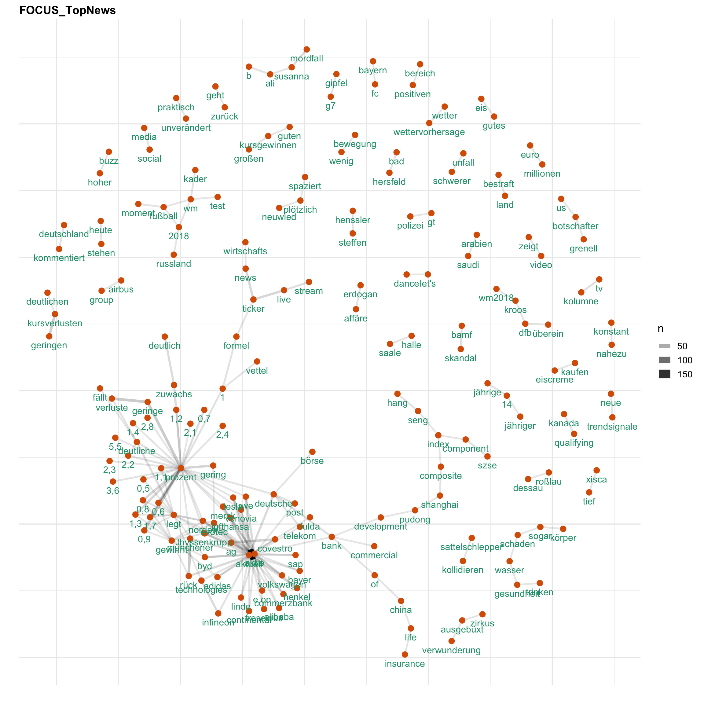
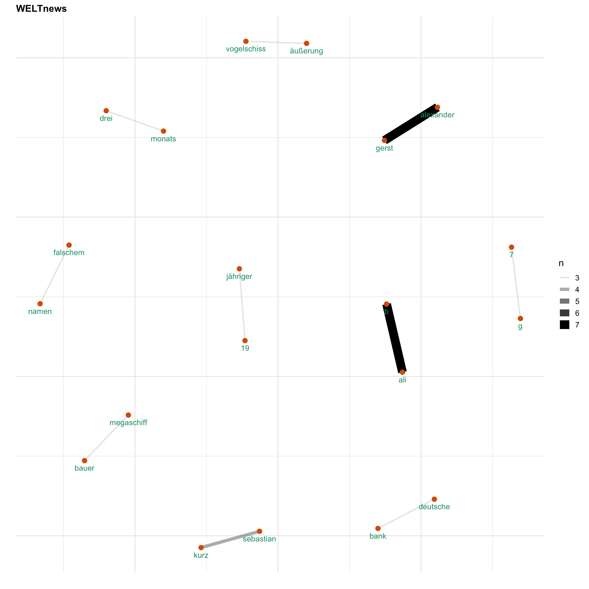
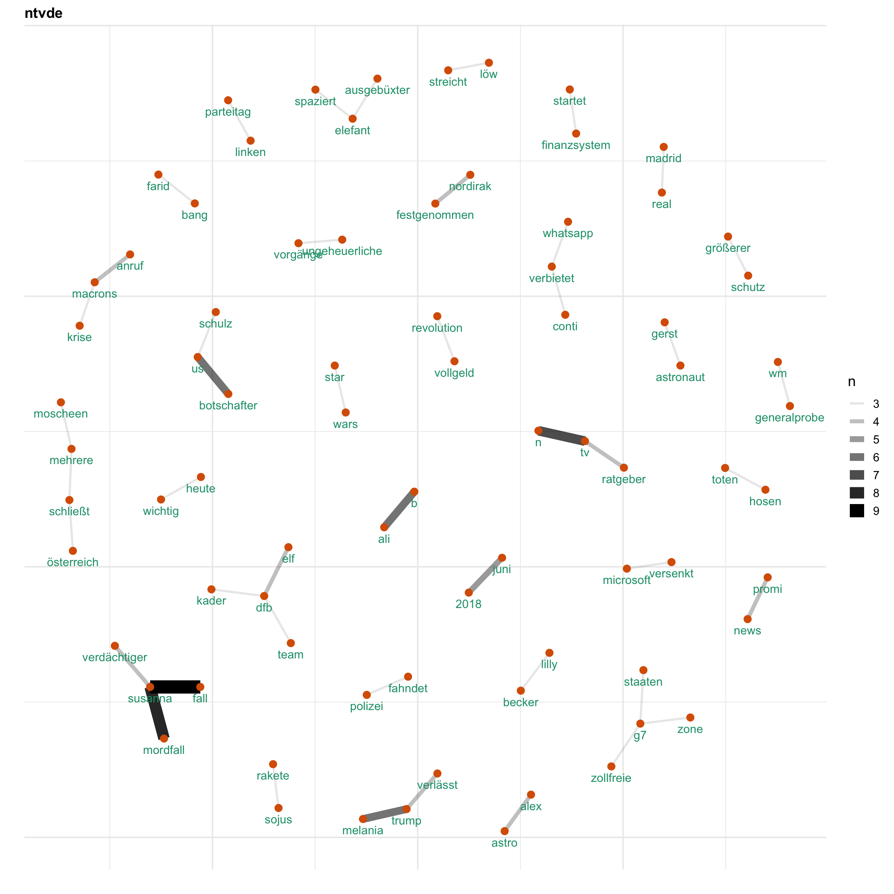
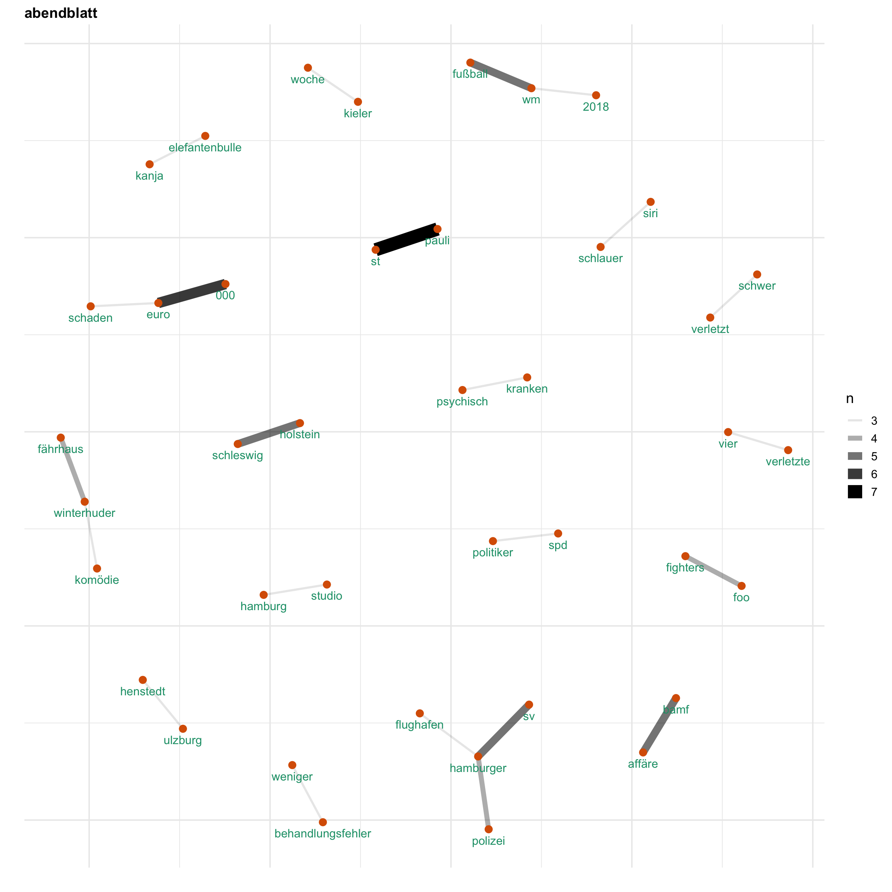
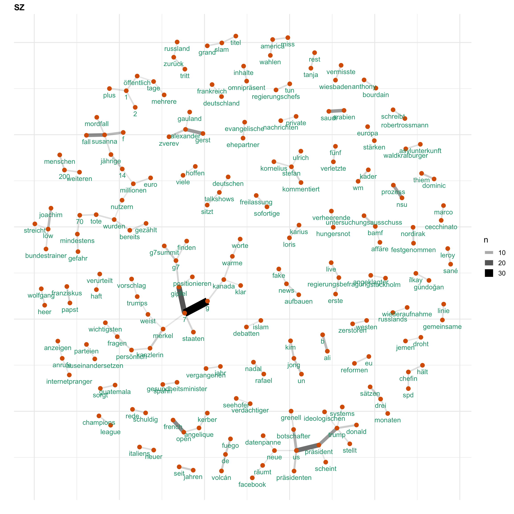
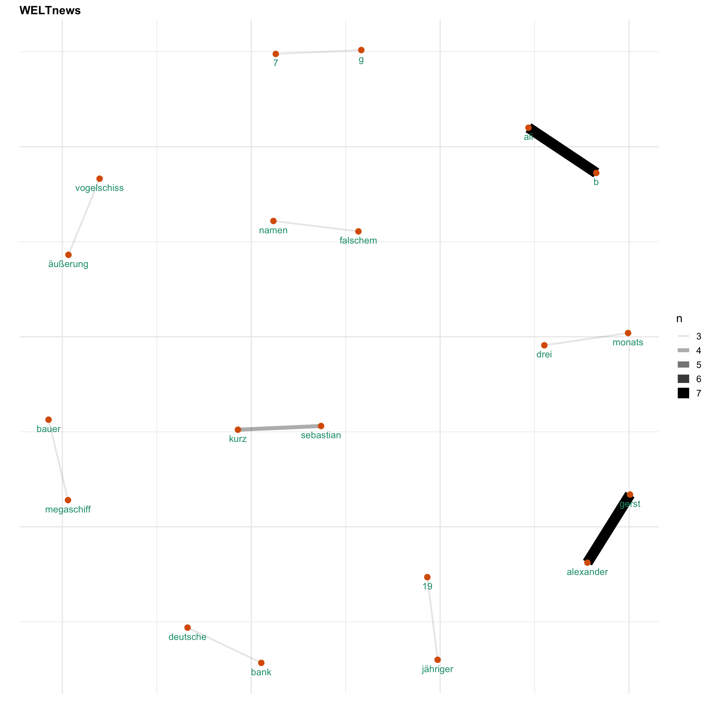
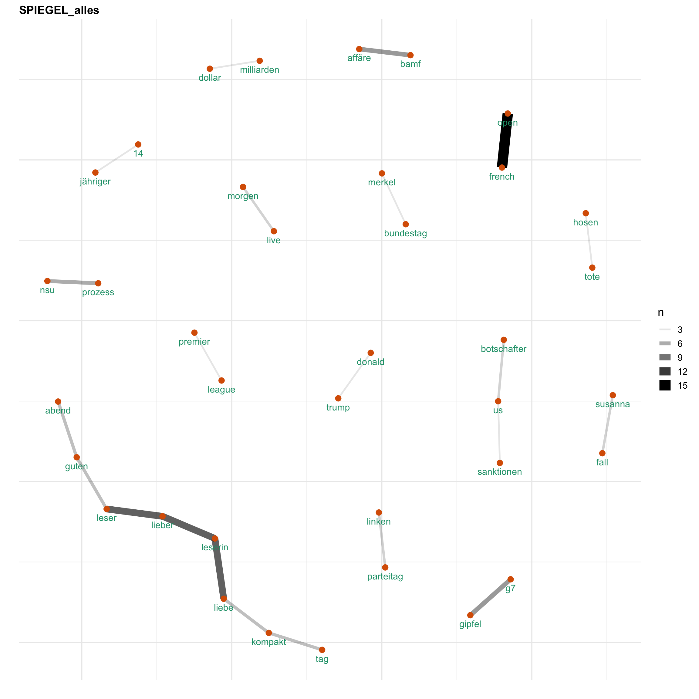
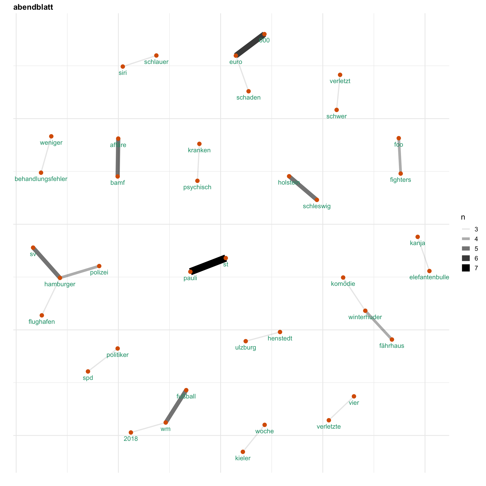
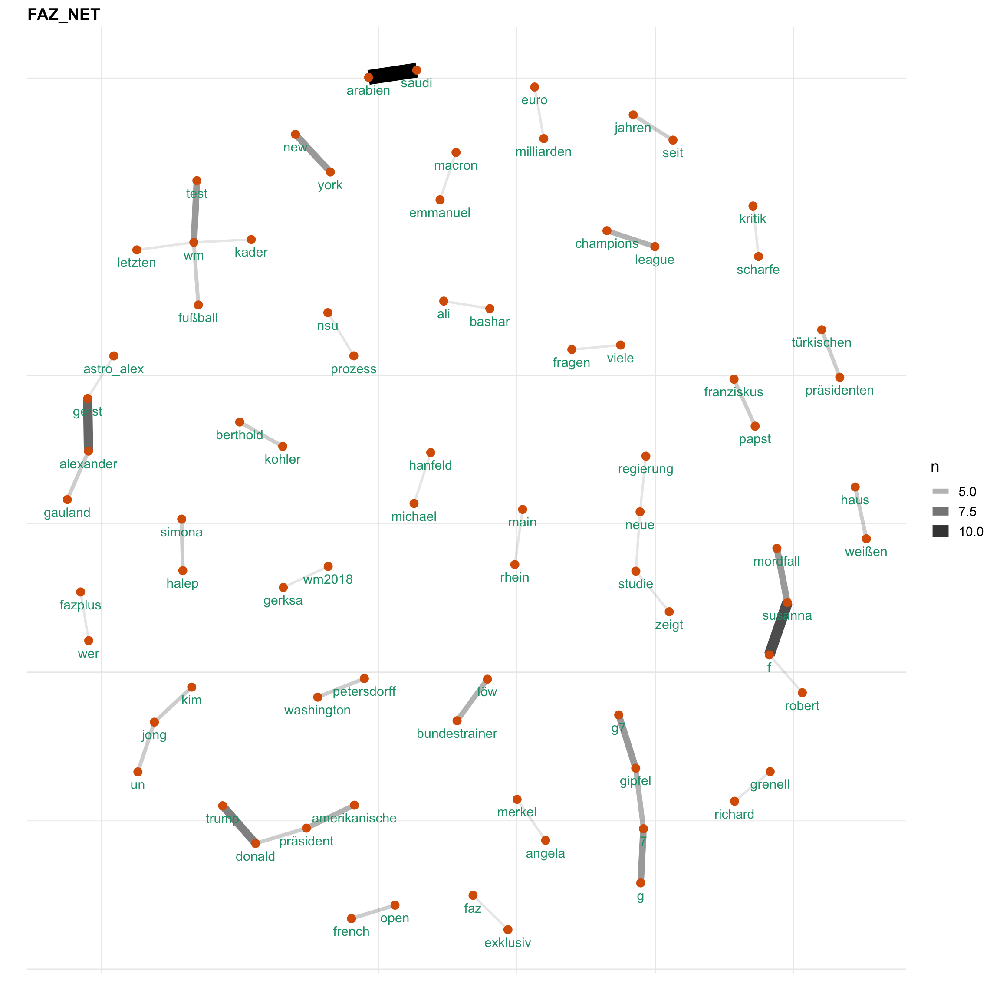
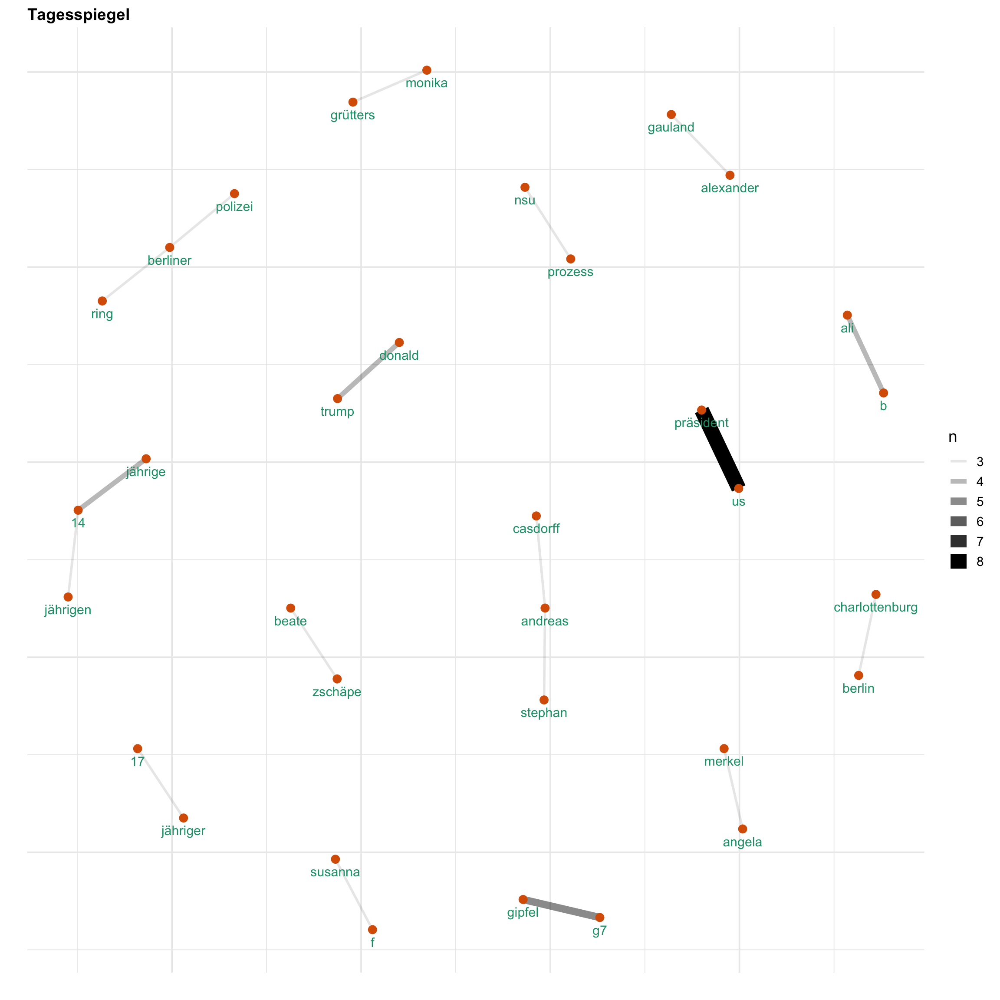

Nachrichten Tweets
rm(list = ls())
## --- Load Packages --- ##
library(rtweet)
library(dplyr)
library(ggplot2)
library(rvest)
library(tidyr)
library(wordcloud2)
library(igraph)
library(ggraph)
library(stringr)
library(ggraph)
library(tm)
library(tidytext)
library(stringi)
library(patchwork)
## ---- My Functions --- ##
source("functions.R")
## --- Set Stylings --- ###
knitr::opts_chunk$set(message=FALSE, warning=FALSE)
theme_set(
theme_bw(base_size = 14) +
theme(
plot.title = element_text(face = "bold", size = 14,
margin = margin(0, 0, 4, 0, "pt")),
plot.subtitle = element_text(size = 12),
plot.caption = element_text(size = 6, hjust = 0),
axis.title = element_text(size = 10),
panel.border = element_blank()
)
)
## --- Global Variables --- ##
# Define Color
Mycol <- RColorBrewer::brewer.pal(8, "Dark2")
# Define http pattern
http <- paste(c("http.*","https.*"), sep = "|")
# Define Stopwords
stopwords <- data_frame(
word = stopwords("german")
) %>% rbind(
data_frame(word = c("t.co","via","mal","dass","mehr", "amp",
"schon","rt","gibt", "ja", "natürlich"))
)Welche Nachrichten-Inhalte werden aktuell bei Twitter diskutiert? Um das herauszufinden, haben wir die aktuellsten deutschsprachigen Tweets gesammelt, die einen Link zu einer Nachrichtenseite beinhalten. Die Tweets wurden mit Hilfe des R Packetes rtweet über die REST API ausgelesen. Der gesamte Code ist hier einzusehen.
Folgende Variablen sind in unserem Datensatz vorhanden.
load("../data/2018-06-10.Rda")
colnames(rt)## [1] "status_id" "created_at"
## [3] "user_id" "screen_name"
## [5] "text" "source"
## [7] "reply_to_status_id" "reply_to_user_id"
## [9] "reply_to_screen_name" "is_quote"
## [11] "is_retweet" "favorite_count"
## [13] "retweet_count" "hashtags"
## [15] "symbols" "urls_url"
## [17] "urls_t.co" "urls_expanded_url"
## [19] "media_url" "media_t.co"
## [21] "media_expanded_url" "media_type"
## [23] "ext_media_url" "ext_media_t.co"
## [25] "ext_media_expanded_url" "ext_media_type"
## [27] "mentions_user_id" "mentions_screen_name"
## [29] "lang" "quoted_status_id"
## [31] "quoted_text" "retweet_status_id"
## [33] "retweet_text" "place_url"
## [35] "place_name" "place_full_name"
## [37] "place_type" "country"
## [39] "country_code" "geo_coords"
## [41] "coords_coords" "bbox_coords"Zeitraum
ts_plot(rt,"30 minutes",
color = Mycol[3]) +
theme(plot.title = element_text(face = "bold")) +
labs(
x = NULL, y = NULL,
title = "Nachrichten-Tweets",
subtitle = paste("Zeitraum:",min(rt$created_at),"bis",max(rt$created_at))
)
Retweets
Welche Tweets wurden am häufigsten geteilt? Die top 10 sind:
rt %>%
filter(is_retweet == FALSE ) %>%
dplyr::select(screen_name, text, retweet_count) %>%
group_by(screen_name, text) %>%
summarise(retweet_count = sum(retweet_count)) %>%
arrange(desc(retweet_count)) %>%
.[1:10,] %>%
#knitr::kable(align = "l")
htmlTable::htmlTable(align="l")| screen_name | text | retweet_count | |
|---|---|---|---|
| 1 | TheRickWilson |
Die in jail. https://t.co/H9jWePItYT |
1260 |
| 2 | DPolGHH | #DPolGHH »Und ja, natürlich gibt es auch deutsche Kriminelle. (…) Das stimmt, und jedes Verbrechen ist eines zu viel. Und genau deswegen brauchen wir ganz sicher nicht auch noch Verbrecher, die kein Recht haben, in Deutschland zu sein.« #Susanna https://t.co/4OSzTxFbB0 | 898 |
| 3 | ESukhni | Der Befund ist verheerend: #Rechtspopulisten bestimmen in hohem Maße die Themen von TV-Talkshows. Das ARD-Magazin„Monitor“ hat alle 141 Sendungen im ersten und zweiten Programm des vergangenen Jahres ausgewertet – von„Anne Will“ bis „Maybrit Illner“. https://t.co/dGxsU5sbgA | 897 |
| 4 | Steinhoefel | Diesmal hat sich der sog. “Skandal-Rapper” #FaridBang mit den Falschen angelegt und auf unsere Abmahnung hin klein beigegeben. Ein Kritiker nannte seine Texte einmal “bestürzend dumm”. Dass dies zutrifft, hat er hier erneut unter Beweis gestellt. https://t.co/Ja10zPrLIX | 543 |
| 5 | maxotte_says | #Merkel weist im #Bundestag jede Verantwortung für #Asyl-Affäre von sich. Sie will #Russland dauerhaft von #G8 ausschließen. Wenn jemand in dieses Amt gehievt worden wäre, um der #Bundesrepublik maximalen Schaden zuzufügen, müsste er so handeln wie Merkel. https://t.co/q8ezqC1tJB | 499 |
| 6 | henningtillmann |
„Wer sich nicht an unsere Gesetze hält, hat in diesem Land nichts zu suchen.“ 54 Strafzettel in sechs Monaten: https://t.co/dXCfOLYBwD |
488 |
| 7 | KokoLores20 | Buschkowsky: “BAMF-Führung, Innenministerium und die gesamte Regierung kannten das Ausmaß des Asyl-Chaos bereits, als sie uns Bürger noch mit Durchhalteparolen für dumm verkauften” https://t.co/7Goz0E8qPX | 444 |
| 8 | AfD | Unfassbar! Was ist aus unserem einst so sicheren 🇩🇪 mittlerweile geworden? »Zudem soll er im Frühjahr schon ein elfjähriges Mädchen vergewaltigt haben.« #AfD #Susanna https://t.co/WG2r7DT3JD | 443 |
| 9 | publizistikon | Philologenverband hatte Mädchen vor schnellen Beziehungen mit Flüchtlingen gewarnt. Die linksextremen Besserwisser der @SZ nannten das damals “Hetze”. Nichts vergessen! Nichts vergeben! https://t.co/jSk7dYGIys #Susanna | 438 |
| 10 | KokoLores20 | Wie immer: Susannas Vergewaltiger und Mörder ist ein als Gewalttäter polizeibekannter Flüchtling. Politik und Justiz vergewaltigen und töten mit. Wiederholt. Ohne Reue. Ohne Konsequenzen. Ignoriert von den GEZ-Medien. https://t.co/1j3JJOYkNd | 429 |
Hashtags
Welche Hashtags wurden am häufigsten verwendet?
rt$hashtags %>%
unlist() %>%
na.omit() %>%
table() %>%
sort(decreasing = TRUE) %>%
tibble::as_tibble() -> hash_table
colnames(hash_table) <- c("hashtag", "count")
hash_table %>%
top_n(20, count) %>%
ggplot( aes(reorder(hashtag,count), count)) +
geom_col(fill = Mycol[2], alpha = 0.6) +
coord_flip() +
labs(
x = NULL,
y = NULL,
title = "Top 20 Hashtags"
) 
Wörter
Welche Wörter wurden am häufigsten verwendet?
rt_clean <- rt %>%
# First, remove http elements manually
mutate(stripped_text = gsub(http,"", text))
rt_tidy_words <- rt_clean %>%
# Second, remove punctuation, convert to lowercase, add id for each tweet!
dplyr::select(stripped_text) %>%
unnest_tokens(word, stripped_text) %>%
# Third, remove stop words from your list of words
anti_join(stopwords) %>%
# Count Word occurences
count(word, sort = TRUE)
# Finally, plot the top 15 words
rt_tidy_words %>%
top_n(20) %>%
mutate(word = reorder(word, n)) %>%
ggplot(aes(x = word, y = n, fill = word)) +
geom_col(fill = Mycol[2],
alpha = 0.6) +
xlab(NULL) +
coord_flip() +
labs(y = "Count",
x = "Unique words",
title = "Top 20 Wörter") +
theme(legend.position = "") 
Wordcloud
wordcloud2(rt_tidy_words, size = 1)Nachrichten Medien
Wir betrachten im nachfolgenden die Tweets, die zu einem der größeren deutschen online Nachrichten gehören. Die grün eingefärbten Balken in der nachfolgenden Abbildung zeigen an, welche Nachrichten-Profile wir genau untersuchen:
news <- c("welt", "handelsblatt", "FOCUS_TopNews",
"WELTnews", "ntvde", "abendblatt", "FAZ_NET", "Tagesspiegel",
"SPIEGEL_alles", "wiwo", "zeitonline", "BILD")
news_reg <- paste("welt", "handelsblatt", "FOCUS_TopNews",
"WELTnews", "ntvde", "abendblatt", "FAZ_NET", "Tagesspiegel",
"SPIEGEL_alles", "wiwo", "zeitonline", "BILD", sep = "|")
name_table <- rt %>%
group_by(screen_name) %>%
tally(sort = TRUE) %>%
ungroup() %>%
mutate(news = ifelse(screen_name %in% news, T, F))
ggplot(name_table[1:30,],
aes(reorder(screen_name,n),n,
fill = factor(news))) +
geom_col(alpha = 0.7,
show.legend = F) +
scale_fill_manual(values = Mycol[c(2,1)]) +
coord_flip() +
labs(
x = NULL,
y = NULL,
title = "Top 30 Twitter Nutzer...",
subtitle = "...die einen Nachrichtentweet gesendet haben"
) 
Ein Tweet wird einem Nachrichtenabieter zugewiesen, wenn er (1) entweder direkt von diesem gesendet wurde, oder (2) in einem Tweet verlinkt wurde.
rt_news <- rt %>%
mutate(stripped_text = gsub(http,"", text)) %>%
# create variable indicating wich news profile is mentioned
mutate(mentions = stri_join_list(stri_extract_all_words(mentions_screen_name),
sep=", ")) %>%
# filter tweets, that mention these profiles
filter(screen_name %in% news | str_detect(mentions, paste(news, sep="|"))) %>%
# create new variable to assign news website to the tweet
mutate(news_name = ifelse(screen_name %in% news, screen_name, mentions)) %>%
mutate(news_name = str_match(news_name, news_reg))
rt_news %>%
group_by(news_name) %>%
tally() %>%
ggplot(aes(reorder(news_name, n),n)) +
geom_col(fill = Mycol[1], alpha = 0.8) +
coord_flip() +
labs(x="", title="Nachrichten Tweets",
subtitle = "Direkttweet des Mediums oder Nennung in einem Fremdtweet")
Uns interessiert vorallem, wie Themen bei den verschiedenen Medien besprochen werden. Hierfür gucken wir uns ein Wörter-Netzwerk an, welches anzeigt, welche Wörter wie häufig zusammen verwendet werden.
p1 <- word_network(news[1])
p2 <- word_network(news[2])
p3 <- word_network(news[3])
p4 <- word_network(news[4])
p5 <- word_network(news[5])
p6 <- word_network(news[6])
p7 <- word_network(news[7])
p8 <- word_network(news[8])
p9 <- word_network(news[9])
p10 <- word_network(news[10])
p11 <- word_network(news[11])
p12 <- word_network(news[12])p1
p2
p3
p4
p5
p6
p7
p8
p9
p10
p11
p12